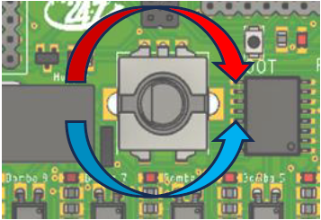

2. Instrucciones de uso
Conexión de la Tarjeta Vending
- Asegúrate de que la tarjeta esté correctamente conectada a todos los componentes relevantes, incluyendo bombas, botones, hopper, monedero y billetero según su máquina.
- Asegúrate de que todas las bombas conectadas operen a 12V.
- El cable negativo (negro) de todas las bombas debe unirse y conectarse directamente a la fuente de alimentación, mientras que el cable positivo (rojo) de cada bomba se conecta a la tarjeta vending.
- Conecta la tarjeta vending a la fuente de alimentación estable y adecuada, asegurándote de que todas las conexiones sean firmes y seguras.
Navegación del menú
- Gira el control rotativo para poder visualizar el menú.
- Usa el control rotativo para navegar entre las opciones del menú.
- Para seleccionar una opción, presiona el control rotativo. Esto te permitirá entrar en la opción seleccionada y realizar ajustes.

Ejemplo del control rotativo (encoder) utilizado para navegar por el menú de la tarjeta vending.